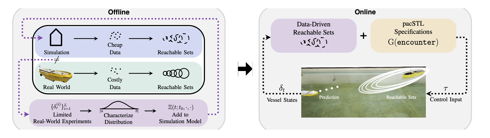

Abstract
Robotic systems must operate under uncertainty while satisfying complex task and safety specifications. Monitoring such specifications under uncertainty remains challenging, as existing formulations typically require extensive data or explicit uncertainty distributions. In this paper, we propose a realtime monitoring framework that reduces data requirements by leveraging data-driven reachable sets for specification evaluation. We instantiate the framework for maritime navigation, where complex specifications arise from traffic rules. We develop a dataefficient pipeline for constructing reachable sets and derive a monitoring formulation suitable for real-time deployment. Simulation and hardware experiments demonstrate robust monitoring under realistic disturbances, achieving improved risk detection compared to state-of-the-art metrics.
Overview
Assessing temporal logic specification compliance under unbounded uncertainty is typically data-intensive. This is especially challenging for multi-agent relative states, as in maritime navigation. We build on pacSTL to enable specification monitoring under uncertainty for maritime navigation. Deploying pacSTL in the real world requires two key capabilities: (i) PAC-bounded reachable sets representative of real-world behavior, and (ii) a specification formulation that enables real-time evaluation. We address these challenges by developing a sim-to-real calibration procedure that aligns simulated trajectories with the real-world distribution using limited experimental data, and by introducing efficiently evaluatable atomic propositions for maritime navigation. These contributions facilitate real-time monitoring of complex temporal logic specifications under uncertainty using offline-computed reachable sets, without requiring a symbolic model of the system.

Data-Driven Reachability Analysis with Real-World Disturbances
We develop a data-driven reachability framework that combines limited real-world experimental data with high-fidelity simulation to construct reachable sets that capture realistic system behavior. Rather than computing reachable sets directly from costly physical experiments, we use limited experimental data to characterize the distribution of real-world disturbances and incorporate this information into a nominal simulation model. This allows us to generate large quantities of trajectories in simulation that remain representative of real-world behavior.
A forward reachable set at time $t$ is $$\mathcal{R}_t = \{\Xi(t;t_0, x_0, d) : x_0 \in \mathcal{X}_0, d \in \mathcal{D}\}$$ where $\mathcal{X}_0$ specifies the operating conditions of interest, $\mathcal{D}$ captures disturbance terms, uncertain parameters, or other application-specific sources of variability, and $\Xi(t;t_0, \cdot, \cdot) : \mathbb{R}^{n_x} \times \mathcal{D} \rightarrow \mathbb{R}^{n_x}$ is the state transition function. We characterize $\mathcal{D}$ from real-world experimental data. When only limited data is available and no prior distribution is known, we used the observed extrema of each disturbance component to define a bounded support $S_{\mathcal{D}}$ and model the disturbance distribution as uniform over this support. We then sample initial conditions and disturbances from their respective distributions and propagate them through the high-fidelity simulation model to generate trajectories for reachable set computation.
In the maritime setting, disturbances are largely captured by $$b = \mathbf{M}\dot{\nu} - \tau + \mathbf{C}(\nu)\nu + \mathbf{D}(\nu)\nu.$$ We estimate the support $S_{\mathcal{D}}$ using data from approximately $100$ physical vessel trials conducted under representative operating conditions, including still-water or wave conditions. During each trial, the vessel traverses the test pool under randomly sampled control inputs, while motion-capture measurements of vessel velocity and applied inputs are used to infer the disturbance. The component-wise extrema of $b$ observed across all trials define the $b$-component of $S_{\mathcal{D}}$ used in simulation. Additionally, $\mu_{\mathcal{X}_0}$ is characterized to capture the vessel's operating conditions. The vessel dynamics are invariant to global translations and equivariant under rotations, which we exploit to reduce the number of reachable sets computed offline. We partition the experimental range of surge velocities into four intervals and compute a reachable tube for each operating regime.
The resulting trajectories provide a data-driven representation of vessel behavior under experimentally observed disturbanes, while avoiding prohibitive costs of generating enough physical trials to construct reachable sets directly. These offline reachable sets are subsequently used for uncertainty-aware, real-time monitoring with pacSTL.
Maritime Navigation
We demonstrate our framework in autonomous maritime navigation governed by the Convention on the International Regulations for Preventing Collisions at Sea (COLREG). These rules specify how vessels should respond to different encounter situations, including crossing, head-on, and overtaking encounters, and distinguish between give-way and stand-on behavior.
We focus on crossing and head-on encounters between an autonomous ego vessel and another traffic vessel. A head-on or crossing encounter is present when another vessel approaches the ego vessel from a specified sector and poses a risk of collision in the near future. A head-on encounter corresponds to an approach within the front sector (i.e., $\pm 10^\circ$ from the orientation of the ego vessel), whereas a crossing encounter corresponds to an approach from the right.
The maritime use case illustrates a realistic setting for evaluating different robustness measures as optimization objectives and demonstrates that efficient algorithms can be developed for nonlinear robustness measures.
pacSTL specifications are constructed to determine whether an evasion maneuver is required.
First, we define predicates that determine whether the other vessel will occupy the relative position or orientation sector corresponding to each encounter.
The relative position and orientation specifications are defined using position_halfplane and orientation_halfplane:
\[
\begin{aligned}
\mathtt{pos\_encounter} &:= \\
&\mathtt{position\_halfplane}(\underline{\gamma^{p,e}}, \underline{\sigma}, \delta_t^E, \delta_t^O, v_{\max}) \land \\
&\mathtt{position\_halfplane}(\overline{\gamma^{p,e}}, \overline{\sigma}, \delta_t^E, \delta_t^O, v_{\max}),
\end{aligned}
\]
\[
\begin{aligned}
\mathtt{ori\_encounter} &:= \\
&\mathtt{orientation\_halfplane}(\underline{\gamma^{\psi,e}}, \underline{\sigma}, [\underline{\psi}_t^O, \overline{\psi}_t^O], \psi_t^E, r_{\max}) \land \\
&\mathtt{orientation\_halfplane}(\overline{\gamma^{\psi,e}}, \overline{\sigma}, [\underline{\psi}_t^O, \overline{\psi}_t^O], \psi_t^E, r_{\max}).
\end{aligned}
\]
Then, we formalize each encounter specification as a conjunction of $\mathtt{pos\_encounter}$, $\mathtt{ori\_encounter}$, and $\mathtt{collision\_risk}$. To trigger an evasive maneuver, we require these encounters to persist over a specified time interval $[t_\mathrm{start}, t_\mathrm{end}]$: Specifically, for a head-on encounter: $$ \mathrm{G}_{[t_\mathrm{start}, t_\mathrm{end}]} (\mathtt{pos\_head\_on} \land \mathtt{ori\_head\_on} \land \mathtt{collision\_risk}) $$ and for a crossing encounter: $$ \mathrm{G}_{[t_\mathrm{start}, t_\mathrm{end}]} (\mathtt{pos\_crossing} \land \mathtt{ori\_crossing} \land \mathtt{collision\_risk}), $$ where $\mathrm{G}$ is the temporal operator for always.
These specifications are evaluated using pacSTL, which accounts for uncertainty in the traffic vessel’s future behavior through data-driven reachable sets. During experimentation, the ego vessel uses a line-of-sight (LOS) controller to steer towards a specified goal at a desired velocity while continuously monitoring for potential encounters. Once the upper bound on robustness $\mathrm{\overline{h}}$ becomes positive, indicating that an encounter is possible among the behaviors captured by the reachable set, the ego vessel initiates an evasive maneuver by modifying its desired path.
This case study demonstrates the use of pacSTL when combining formalized traffic rules with data-driven predictions of uncertain system behabior to enable real-time, uncertainty-aware collision avoidance.
Qualitative Comparisons